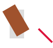
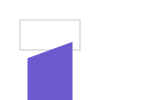
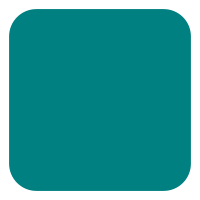

Animation¶
SMIL in the document¶
Every SVG 1.1 animation element is available (animate, set, animateMotion, animateTransform,
animateColor) and is written as SMIL for browsers to play:
import svgwriter as svg
doc = svg.Document(100, 100)
ball = doc.circle(20, 50, 10, fill="tomato")
ball.append(svg.Animate(attribute_name="cx", from_=20, to=80, dur="2s", repeat_count="indefinite"))
doc.save("ball.svg")
doc.at(1.0) # the ball halfway along, as a still
Presets¶
element.animate adds ready-made SMIL animations and chains:
stage = svg.Document(100, 100)
stage.rect(30, 30, 40, 40, rx=6, fill="none", stroke="#ccc") # where it starts, for comparison
logo = stage.rect(30, 30, 40, 40, rx=6, fill="teal")
logo.animate.fade_in(0.5).spin(2, begin=0.5)
stage.at(0.8) # faded in and part-way through the first spin

Group |
Presets |
|---|---|
Appear / disappear |
|
Create |
|
Motion |
|
Turn, scale and skew |
|
Color and any attribute |
|
Shape |
|
Groups |
|
Behaviours (in a scene) |
|
Every preset takes dur and begin in seconds, repeat (a count or "indefinite") and keeps its end
state unless freeze=False. They are plain SMIL, so they play in browsers and in doc.at(t), video,
animated GIF, APNG and WebP.
The transform presets are relative and add up: each starts from wherever the element is, after its
own transform and any earlier preset, so el.animate.rotate(30).rotate(30, begin=1) ends at 60
degrees. They pivot like the static methods: el.rotate(30) and el.animate.rotate(30) both turn
about el.anchor (the bounding-box centre unless set), and about=(x, y) takes a point in parent
coordinates (local ones with local=True). move_by measures along the parent’s axes unless
local=True.
about= also takes a name, read on the element’s own box so it moves and resizes with the element:
"center", "top", "bottom", "left", "right", "top_left", "top_right", "bottom_left",
"bottom_right" (the names of BBox.point), "origin" for the local (0, 0) and, on text,
"baseline" for the start of the first baseline. The same names set the anchor itself, so every later
transform and preset pivots there; an unknown name raises ValueError listing the valid ones:
stage = svg.Document(110, 100)
stage.rect(20, 20, 30, 60, fill="#ddd") # the door at rest, for comparison
door = stage.rect(20, 20, 30, 60, fill="sienna")
door.animate.rotate(-30, about="left") # swings on its hinge
needle = stage.rect(78, 20, 4, 40, fill="crimson", anchor="bottom")
needle.rotate(45) # turns about its base
needle.animate.spin(4, repeat="indefinite") # and so does the animation
stage.at(1.0)


stage = svg.Document(160, 100)
stage.rect(20, 20, 60, 30, fill="none", stroke="#ccc") # the start, for comparison
card = stage.rect(20, 20, 60, 30, fill="slateblue")
card.animate.rotate(90).scale(1.5, begin=1).skew(x=20, begin=2).move_by(40, 0, begin=3)
stage.at(4.0) # the end of the chain


create, uncreate and write animate stroke-dasharray/stroke-dashoffset and fill-opacity.
A shape without a stroke is drawn with its fill color, every contour of a shape draws at once, and
write starts each character a little before the previous one finishes:
stage = svg.Document(260, 100)
title = stage.text("Hello", x=10, y=70, font_size=48, fill="tomato")
title.animate.write(1.5)
badge = stage.circle(210, 50, 30, fill="teal", stroke="navy", stroke_width=3)
badge.animate.create(1).uncreate(1, begin=3)
stage.at(0.6) # half written; the badge's outline drawn, its fill fading in
stage.at(1.6) # written; the badge complete

Started by a click or hover¶
element.animate.on(event) gives the same presets, started by a pointer event instead of the clock;
begin becomes a delay after the event. Events are "click", "hover", "leave", "press",
"release", "focus" and "blur", and a second argument names another element to watch:
doc = svg.Document(width=200, height=60)
key = doc.rect(10, 10, 40, 40, rx=6, fill="teal")
key.animate.on("click").pulse(0.3, repeat=1) # the key bounces when clicked
lamp = doc.circle(150, 30, 12, fill="gold", opacity=0.3)
lamp.animate.on("hover", key).fade_in(0.4) # the lamp lights up when the pointer reaches the key
No script is involved: the file stays plain SVG 1.1 and plays in browsers and SVG viewers. PowerPoint plays click, press and release starts as triggers on the clicked shape (and reading the deck back gives click starts again); it has no hover trigger. Still images, PDF, video and other formats without events show the resting state.
For a style that holds only while the pointer is over an element, use interact.hover with presentation
properties; it is written as a CSS :hover rule:
key.interact.hover(fill="darkcyan", stroke="white", stroke_width=2)

Interactions bundle these under a name: el.interact.button() dims an element under the pointer and
flashes it when pressed, and el.interact.highlight(color=...) outlines it on hover. Register your own
with @svg.preset.interaction; on() also accepts any SVG 1.1 event name ("mousemove", "activate", …):
@svg.preset.interaction
def nudge(element: svg.Element, *, distance: float = 4) -> None:
element.interact.hover(opacity=0.9)
element.animate.on("click").move_by(0, -distance, dur=0.15)
tile = doc.rect(80, 10, 40, 40, rx=6, fill="slateblue").interact.nudge(distance=6)
svg.preset.interaction.unregister("nudge")
Presets of your own¶
A reusable animation is a typed function decorated with @svg.preset.animation. Its first positional
parameter is the element’s Motion (what el.animate returns), every option is keyword-only with a
default, and it returns the motion so calls chain:
@svg.preset.animation
def bob(motion: svg.Motion, *, height: float = 8, dur: float = 1, begin: float = 0,
ease: svg.EaseLike | None = None) -> svg.Motion:
"""Rise by *height* and come back down."""
half = dur / 2
return motion.move_by(0, -height, half, begin=begin, ease=ease).move_by(0, height, half, begin=begin + half,
ease=ease)
stage = svg.Document(100, 100)
dot = stage.circle(20, 40, 6, fill="teal")
dot.animate.apply(bob, height=12).fade_out(begin=1) # typed: editors complete and check the options
dot.animate.bob(begin=2) # by name, like the built-in presets
row = stage.group()
row += [svg.circle(20 + 20 * index, 80, 6, fill="tomato") for index in range(4)]
row.animate.stagger("bob", step=0.2, height=6)
stage.at(0.5) # the dot at the top of its bob, the row part-way through its stagger
print(svg.preset.animation.list()[-1])
svg.preset.animation.unregister("bob")

The shape is checked when the function is decorated, so a mistake fails at once with a TypeError
showing the expected signature. Returning None is accepted too; apply returns the motion either way.
@svg.preset.animation(name="hop") registers under another name. A taken name raises ValueError naming
the function that owns it, built-in presets included; replace=True replaces one on purpose (a
replacement can still call the original as svg.Motion.spin(motion, ...)), and unregistering the
replacement brings the built-in back. svg.preset.animation.list() lists the built-in presets and
yours, and an unknown name in el.animate.<name> raises AttributeError suggesting the closest ones.
Motion.apply also runs functions that are not registered at all.
In a project, presets live in the animations/ folder and are registered when it is
imported.
Easing¶
Every preset with a duration (all but show and hide), and Animate, AnimateTransform, AnimateColor and AnimateMotion, takes ease=: a
timing curve for the whole animation. The named curves are the standard cubic béziers:
|
Control points |
Feel |
|---|---|---|
|
|
constant speed |
|
|
quick start, long gentle stop |
|
|
starts slowly |
|
|
stops slowly |
|
|
slow at both ends |
|
jumps instead of gliding |
race = svg.Document(200, 40)
race.rect(10, 18, 180, 4, fill="#ddd") # the track
box = race.rect(10, 10, 20, 20, fill="teal")
box.animate.move_to(180, 20, dur=1, ease="ease-in-out")
box.animate.fade_in(0.5, ease=(0.2, 0.9, 0.3, 1.0)) # a custom bézier
Any Python function from time to progress works too, overshoot included:
def back_out(t):
return 1 + 2.7 * (t - 1) ** 3 + 1.7 * (t - 1) ** 2
entry = svg.Document(200, 40)
box = entry.rect(90, 10, 20, 20, fill="tomato")
box.animate.slide_in("left", ease=back_out)
entry.at(0.5) # sliding in, overshooting a little
The curve covers the whole timeline, so a preset with several values (bounce, shake, pulse,
color_cycle) moves through all of them along the one curve. Béziers are written as SMIL
calcMode="spline" with exact keySplines (one piece of the curve per value interval), steps as
calcMode="discrete", and a function is sampled into 24 to 60 values at even times (more where it
bends more) played linearly; svg.Ease(curve)(t) evaluates any of them.
Playing SMIL¶
doc.at(seconds) returns a static copy with every animation applied at that moment, so SMIL can be
inspected, rasterized or exported frame by frame, and render_animation plays it without an update
callback. It covers animate, set, animateColor, animateTransform and animateMotion with clock
timing, repeats, fill="freeze", values/keyTimes, every calcMode (discrete, linear, paced and
spline with keySplines), keyPoints and additive="sum", so frames match what browsers play. To turn Python-driven motion into video, GIFs or SMIL, see
Scenes and video.
frame = race.at(0.5) # the box halfway along
Saving keeps the animation where the format can play it: .svg and .svgz keep the SMIL elements,
and .gif becomes an animated GIF of the whole animation (fps=, duration=, loop=; no ffmpeg
needed); .png and .webp become APNG and animated WebP with animate=True. Other still formats show one moment, chosen with seconds=:
doc.save("end.png", seconds=2.0).
Tweening and morphing¶
svg.interpolate(a, b, t) returns the value a fraction t of the way from a to b: numbers, points,
colors, matrices (rotation, scale and skew blended separately, turning the short way), path data and
whole elements. Elements of the same kind blend their attributes and transform; different shapes morph
as outlines, and paint blends along the way. Outlines pair with outlines and holes with holes, nearest
first; a contour without a partner grows from (or shrinks to) its centre, so a B with two holes can
become a ring with one. Each pair is resampled to the same number of points, keeping sharp corners, and
started where the points have least distance to travel, so the in-between shapes do not twist.
start = svg.Polygon.regular(50, 50, 40, 5, fill="gold")
end = svg.circle(50, 50, 30, fill="teal")
frames = [svg.interpolate(start, end, i / 10) for i in range(11)]
print(frames[5].tag, frames[5].get("fill"))
row = svg.Document(600, 100) # the morph in six steps
row += [el.translate(100 * n, 0) for n, el in enumerate([start, *frames[2:9:2], end])]
In an update callback this gives morphs and tweens per frame, for instance
doc[0] = svg.interpolate(start, end, time / duration).
Attribute values inside elements that cannot blend (keywords such as none, font names, lists of different
lengths) switch halfway, as SMIL does. Called directly on two values it cannot blend, interpolate raises
TypeError.
Each kind of value blends with an interpolator from svg.preset.interpolator, a registry like the other
presets: number, matrix, path, array, batch, element, sequence and color, tried in that order.
Register f(a, b, t) -> value for a type or predicate (kind=), for an attribute (attribute=), or both;
yours are tried first, and replace=True under a built-in’s name changes how that kind blends. Attribute
interpolators reach every tween, morph and batch blend of that attribute:
class Weight(int):
pass
@svg.preset.interpolator(kind=Weight)
def weight(a: Weight, b: Weight, t: float) -> Weight:
return Weight(round(a + (b - a) * t, -2))
@svg.preset.interpolator(attribute="stroke_width")
def whole_widths(a: float, b: float, t: float) -> float:
return round(a + (b - a) * t)
print(svg.interpolate(Weight(400), Weight(700), 0.5))
thin, thick = svg.line(0, 0, 50, 0, stroke_width=1), svg.line(0, 0, 50, 0, stroke_width=6)
print(svg.interpolate(thin, thick, 0.3).get("stroke-width"))
svg.preset.interpolator.unregister("weight")
svg.preset.interpolator.unregister("whole_widths")
Packages ship interpolators through the svgwriter.interpolator entry-point group (see
Extending svgwriter).